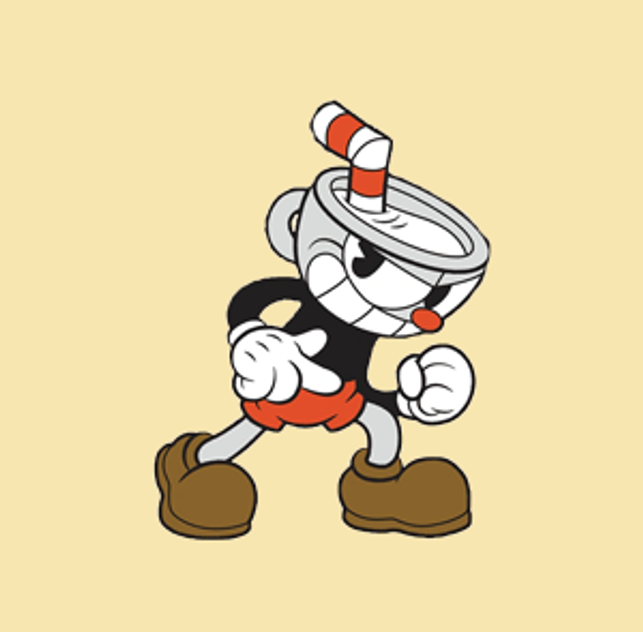

Cuphead

protagonista del gioco e della serie animata e fratello gemello di Mugman. È un omino dei cartoni animati caratterizzato da una testa che è una tazza, con dentro una cannuccia a strisce rosse piegata e con dei pantaloncini rossi. È giocondo e impulsivo: e a causa sua, lui e Mugman si ritrovano indebitati con Satanasso delle loro anime, dando il via agli eventi del gioco.
Torna alla pagina iniziale